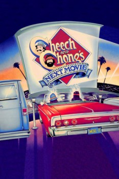

Country:United States, 99 minutes
Spoken languages:English
Genres:Action, Adventure, Comedy
Director(s):Tommy Chong
Writer(s):Tommy Chong, Cheech Marin
Video Codec:Unknown
Number: 1496

Certification:R
Storyline:
Perennially stoned Cheech and Chong tear through the city of Los Angeles, causing trouble wherever they go. After Cheech loses his job, the two pot enthusiasts head to the welfare offices where Cheech's girlfriend, Donna, works. Instead of collecting unemployment, they find themselves thrown back on the streets, searching for a way to earn new income. But when Cheech's cousin, "Red" Mendoza, arrives, things get even crazier.
Cast:
Cheech Marin (as Cheech / Dwayne "Red" Mendoza), Tommy Chong (as Chong), Evelyn Guerrero (as Donna), Betty Kennedy (as Candy), Sy Kramer (as Mr. Neatnik)
Medium: Media file,
Location: D:\Cheech and Chong\[1980] Cheech & Chong's Next Movie.mp4
Loaned: No
Aspect ratio: Unknown